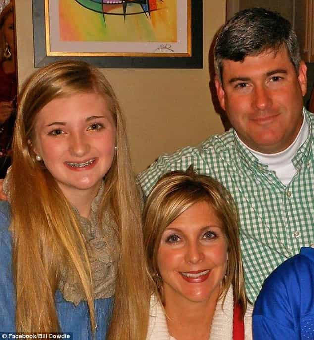

< < < Back
White American Girl Raises Over $30,000 Because Her Dad Is “Racist” Against Black Boyfriend – Return Of Kings
18-year-old Tennessee teenager Allie Dowdle has asked the public to pay for her college tuition after she claimed her “racist” father and mother cut her off financially for dating a black man. She set an initial target of $10,000 but has raised over $30,000 at the time of this writing.
What a poor girl, right? Well, not so much. It turns out that Dowdle attends a $20,000-a-year private school in Memphis. To put this into perspective, the median American income, representing the person earning more than 50% of the population and less than 50% of the population, is just $30,240. That’s $30,240 for food, rent, medical care, entertainment, gas, other car costs, water, electricity, insurance, debt repayments, entertainment, and education, not to mention anything else that a human being needs or desires.
Countering his daughter’s attempts to throw him under the bus, Dowdle’s father insists that one of the real reasons Allie has been cut off is due to her lying about her relationship and dating Michael Swift in secret (just like 90% of American parents who issue curfews and insist on meeting a new boyfriend). He also claimed that she needed to be less pampered and “go out in the world and grow up.”

The only person who deserves to be thrown under the proverbial bus in this situation is Allie Dowdle.
Sadly, Dowdle has proffered zero evidence that her family, particularly her father, is actually racist. Yet this has not stopped over a thousand people so far from “donating” to her campaign. For anyone who has read Robert Cialdini’s book Influence, Allie’s pleas for assistance strongly echo the “because” mechanism for gaining the compliance of others.
One example Cialdini uses in his work is someone trying to push in line to use the photocopier by saying to others something like, “I need to use the photocopier first because I need to make copies.” As stupid and mundane as it sounds, study after study has shown it works. In the case of Dowdle, she has argued that “I need money because my family is racist,” all without proving or even trying to prove anything. We have nothing but her accusation to go by.
Strangely, Allie Dowdle, whose material and social positions are much greater than the vast majority of American youngsters wanting to attend college, expects to be treated as a modern-day civil rights activist for dating and presumably having sex with a black man. Though Return Of Kings has never subscribed to the violent militancy of Black Lives Matter and other repugnant trouble-making groups, we note with great mirth the irony of a rich white girl asking for money for college tuition to fight “racism.”
Why didn’t Allie Dowdle ask for $1,000 or $2,000 for a second-hand car?
A used car I found on sale in nearby Memphis for just $1,995 (via www.autotrader.com). If Allie Dowdle is so hard-working, why didn’t she simply ask for $1,000 or $2,000 for a used car to get to work?
Allie Dowdle insists that she cannot get a job because of issues related to transport, with her car having been taken from her. This begs the question as to why she didn’t have an independent source of savings beforehand. Perhaps the answer is because she just didn’t work much previously. Whereas I and many of you had your first jobs when you were in your mid-teens (I was just 13, actually), Dowdle seems to have relied on her parents much more than working-class and lower middle-class teens.
And if Allie Dowdle is so hard-working, why didn’t she ask for a hand-up instead of a hand-out? All she needs is a car that works, which only costs $1,000 to $2,000, so she can get a job. I would still doubt her story, yet this more modest request would be less of an apparent scam than asking for her tuition to be paid for by the public. Interestingly, her campaign does not mention any of the places she might have applied to for work nearby (assertions that could at least be confirmed or denied by certain businesses) or whether she asked her parents for permission to use the car only for work purposes.
This new GoFundMe opportunist lives in the town of Eads, which is under 30 miles from Memphis by car. A Google Maps check I did shows a number of sizeable nearby towns, too. I find it hard to believe that she cannot find an after-school or weekend job without a car. Bus services are far from non-existent and it would appear that Dowdle’s need for money stems from a reluctance to, say, get up early on a weekend so she can attend a part-time job.
Regardless, having looked at the ways public Tennessee colleges manage admissions, there seems to be little chance that she would be prevented from attending college at all without $10,000 from the public. Her GoFundMe page indicates, falsely, that without such money her dream of going to college will be ruined. Almost every Tennessee (and American) college student enters and leaves college with some level of debt, usually a high one. This does not impede tens or even hundreds of thousands of poor or lower middle-class kids with far less affluent backgrounds than Dowdle from graduating every year.
It’s so easy to assassinate someone’s character nowadays—especially if the accuser is a (young) woman
Artist’s depiction of America in 2017. Oh, and the Salem witch trials, too.
Dowdle’s father Bill is the proprietor of a sporting goods store, which has been in his family’s hands for over a century. This business may not survive the outrage that erupted after Allie Dowdle’s GoFundMe page began trending and was picked up by various media outlets across the world. And we still have no proof that “racism,” rather than Dowdle’s alleged immaturity, was behind her being cut off. It is highly likely that Bill Dowdle will lose tens of thousands in profits, let alone sales, as a result of this highly negative attention.
Though I mentioned the campaign’s use of “because” psychological posturing, its success largely depends on Dowdle being a young, non-ugly teen girl. Thanks to an army of white knights and feminists, rape accusations, for instance, are usually believed immediately and the accused castigated, isolated, and even attacked. But when young women want money, the white knights generally take care of business for them. In fact, before comments were disabled, I noticed an over-representation of females making negative remarks and an over-representation of doughy-looking men donating money.
You can now monetize your daddy issues
Parents and fathers in particular are around to set boundaries for their children, especially when those children suck at their financial teat, 18 and over or not. It comes as no surprise that teenage girls’ conflicts with the authority of their parents is one of the most recycled tropes found in modern cinema. Perversely, Allie Dowdle has illustrated that, with no evidence whatsoever, an aggrieved teenage girl can now throw her family under the bus and expect to make a small fortune from it. All she needs is to be non-ugly and have the appropriate prop (in this instance a black boyfriend) to make a certain claim (here, racism).
Some teenagers are, of course, going to genuinely believe what they write to try and get money. Anger is a strange thing. Nonetheless, the fact that so many complete strangers are donating, without any corroboration other than the words of the girl who organized the fundraising herself (why didn’t a friend, or the boyfriend’s family?), portends very badly for society at large. If your alleged “mistreatment” ticks the right boxes, you can expect a hefty payday, all whilst leaving those you accused to be kicked and screamed at for their “crimes.”
Meanwhile, plenty of actual victims of the world, with absolutely no means to better their situation, are left to starve, go without, and generally suffer.
Read More: Are Black People More Racist Than White People?